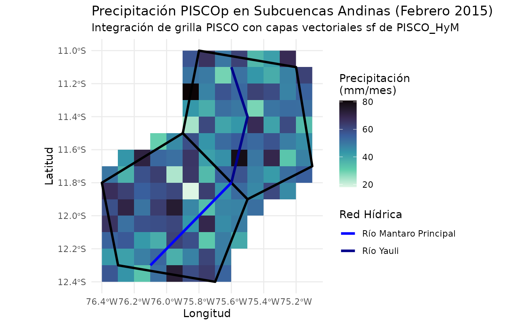
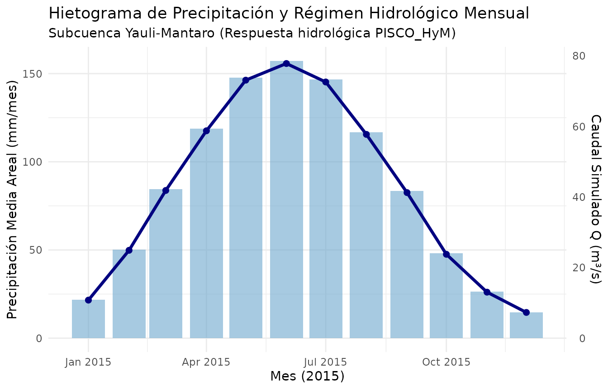

3. Aplicaciones Hidrológicas y Cuencas con PISCO_HyM
Source:vignettes/hydrological-applications.Rmd
hydrological-applications.RmdIntroducción
El ecosistema PISCO_HyM (PISCO Hydrological
Model) comprende modelos hidrológicos grillados y vectoriales
desarrollados para todo el territorio peruano y cuencas
transfronterizas: 1. PISCO_HyM_GR2M: Modelo de balance
hídrico mensual a escala nacional (1981–2020), calibrado con 147
estaciones hidrométricas (Llauca et al., 2021). 2.
PISCO_HyM_Daily / ARNOVIC: Modelo diario regionalizado
y desacoplado mediante similitud física (Llauca et al., 2023). 3.
Capas Vectoriales Oficiales: Polígonos de cuencas
hidrográficas (cat_pisco_gr2m) y red de tramos de ríos
(riv_pisco_gr2m) en formato GeoPackage
(.gpkg).
En esta viñeta se muestra cómo integrar capas espaciales vectoriales con grillas climáticas para realizar análisis hidrológicos por cuencas.
1. Definición de Cuencas y Redes Fluviales de Estudio
Para ilustrar el flujo de trabajo de forma completamente
reproducible, construimos geometrías representativas de dos subcuencas
andinas contiguas y sus tramos fluviales en formato sf:
# Polígonos de dos cuencas andinas (Cuenca Alta y Cuenca Media)
poly_c1 <- sf::st_polygon(list(matrix(
c(-75.8, -11.0, -75.2, -11.1, -75.1, -11.7, -75.5, -11.9, -75.9, -11.5, -75.8, -11.0),
ncol = 2, byrow = TRUE
)))
poly_c2 <- sf::st_polygon(list(matrix(
c(-75.9, -11.5, -75.5, -11.9, -75.7, -12.4, -76.3, -12.3, -76.4, -11.8, -75.9, -11.5),
ncol = 2, byrow = TRUE
)))
cuencas_sf <- sf::st_sf(
id_cuenca = c("CUENCA_ALTA", "CUENCA_MEDIA"),
nombre = c("Subcuenca Yauli-Mantaro", "Subcuenca Cunas-Mantaro"),
area_km2 = c(3250.4, 4120.8),
geometry = sf::st_sfc(poly_c1, poly_c2, crs = 4326)
)
# Tramos de ríos principales
linea_r1 <- sf::st_linestring(matrix(
c(-75.6, -11.1, -75.5, -11.4, -75.6, -11.8), ncol = 2, byrow = TRUE
))
linea_r2 <- sf::st_linestring(matrix(
c(-75.6, -11.8, -75.9, -12.1, -76.1, -12.3), ncol = 2, byrow = TRUE
))
rios_sf <- sf::st_sf(
rio = c("Río Yauli", "Río Mantaro Principal"),
orden_stahler = c(4, 6),
geometry = sf::st_sfc(linea_r1, linea_r2, crs = 4326)
)
cuencas_sf
#> Simple feature collection with 2 features and 3 fields
#> Geometry type: POLYGON
#> Dimension: XY
#> Bounding box: xmin: -76.4 ymin: -12.4 xmax: -75.1 ymax: -11
#> Geodetic CRS: WGS 84
#> id_cuenca nombre area_km2 geometry
#> 1 CUENCA_ALTA Subcuenca Yauli-Mantaro 3250.4 POLYGON ((-75.8 -11, -75.2 ...
#> 2 CUENCA_MEDIA Subcuenca Cunas-Mantaro 4120.8 POLYGON ((-75.9 -11.5, -75....2. Grilla de Precipitación y Evapotranspiración
Creamos una grilla de precipitación mensual correspondiente al ciclo hidrológico anual (12 meses):
r_base <- terra::rast(
xmin = -76.6, xmax = -75.0,
ymin = -12.6, ymax = -10.8,
resolution = 0.10,
crs = "EPSG:4326"
)
meses <- 1:12
dts <- seq(as.Date("2015-01-01"), by = "month", length.out = 12)
set.seed(123)
capas_pr <- lapply(meses, function(m) {
# Ciclo anual de lluvia en la sierra central
lluvia_media <- 140 * sin(m * pi / 12)^2 + 15
r <- r_base
terra::values(r) <- rnorm(terra::ncell(r), mean = lluvia_media, sd = 12)
r
})
r_precip <- terra::rast(capas_pr)
terra::time(r_precip) <- dts
names(r_precip) <- format(dts, "P_%Y_%m")
terra::units(r_precip) <- "mm/month"3. Recorte Espacial con Geometrías de Cuenca
(pisco_clip)
Con pisco_clip(), podemos recortar la grilla climática
exactamente a la delimitación geográfica de las cuencas
hidrológicas:
# Recorte espacial exacto al polígono de las cuencas
r_precip_cuencas <- pisco_clip(r_precip, mask = cuencas_sf)
r_precip_cuencas
#> class : SpatRaster
#> size : 14, 13, 12 (nrow, ncol, nlyr)
#> resolution : 0.1, 0.1 (x, y)
#> extent : -76.4, -75.1, -12.4, -11 (xmin, xmax, ymin, ymax)
#> coord. ref. : lon/lat WGS 84 (EPSG:4326)
#> source(s) : memory
#> names : P_2015_01, P_2015_02, P_2015_03, P_2015_04, P_2015_05, P_2015_06, ...
#> min values : -3.331805, 18.068926, 53.779604, 89.407887, 117.856949, 125.4491, ...
#> max values : 63.270701, 80.857498, 117.300568, 153.986712, 186.306228, 194.486209, ...
#> unit : mm/month
#> time (days) : 2015-01-01 to 2015-12-01 (12 steps)Visualización Integrada: Grilla + Polígonos de Cuenca + Red de Drenaje
# Convertir una capa de raster a data.frame para graficar con ggplot2
df_raster <- as.data.frame(r_precip_cuencas[["P_2015_02"]], xy = TRUE)
colnames(df_raster) <- c("lon", "lat", "precip")
ggplot() +
geom_raster(data = df_raster, aes(x = lon, y = lat, fill = precip)) +
scale_fill_viridis_c(name = "Precipitación\n(mm/mes)", option = "mako", direction = -1) +
geom_sf(data = cuencas_sf, fill = NA, color = "black", linewidth = 1.1) +
geom_sf(data = rios_sf, aes(color = rio), linewidth = 1.2) +
scale_color_manual(name = "Red Hídrica", values = c("blue", "darkblue")) +
labs(
title = "Precipitación PISCOp en Subcuencas Andinas (Febrero 2015)",
subtitle = "Integración de grilla PISCO con capas vectoriales sf de PISCO_HyM",
x = "Longitud",
y = "Latitud"
) +
theme_minimal()
4. Estimación de Precipitación Media Areal por Cuenca
En hidrología, la precipitación media areal acumulada en la cuenca es la variable de entrada fundamental para los balances hídricos y la modelación de caudales.
Podemos calcular el promedio zonal de precipitación para cada cuenca a lo largo de los 12 meses:
# Extracción zonal de promedio por cuenca
precip_mat <- terra::extract(r_precip, terra::vect(cuencas_sf), fun = mean, na.rm = TRUE)
capas_nombres <- paste0("P_", format(dts, "%Y_%m"))
# Reestructurar a formato largo en base R sin dependencias adicionales
df_areal <- data.frame(
ID = rep(cuencas_sf$nombre, each = length(dts)),
fecha = rep(dts, times = nrow(cuencas_sf)),
precip_mm = as.vector(t(as.matrix(precip_mat[, capas_nombres])))
)
head(df_areal)
#> ID fecha precip_mm
#> 1 Subcuenca Yauli-Mantaro 2015-01-01 21.78633
#> 2 Subcuenca Yauli-Mantaro 2015-02-01 50.31828
#> 3 Subcuenca Yauli-Mantaro 2015-03-01 84.59257
#> 4 Subcuenca Yauli-Mantaro 2015-04-01 118.75091
#> 5 Subcuenca Yauli-Mantaro 2015-05-01 147.75050
#> 6 Subcuenca Yauli-Mantaro 2015-06-01 157.276275. Simulación de Caudales Mensuales y Coeficiente de Escorrentía
A partir de la precipitación areal () y considerando la dinámica de balance de PISCO_HyM_GR2M (retención en suelo, evapotranspiración real y escorrentía), podemos simular el hidrograma mensual de caudales ():
# Coeficiente de escorrentía típico en cuencas de cabecera andinas (0.35 - 0.45)
C_runoff <- 0.40
# Caudal estimado Q = (C * P * Area) / delta_t
# Donde delta_t es el número de segundos en el mes (~ 30.4 días * 86400 s/día)
segundos_mes <- 30.4 * 86400
# Calcular caudal mensual para la Subcuenca Yauli-Mantaro (Area = 3250.4 km2 = 3250.4 * 10^6 m2)
area_m2 <- 3250.4 * 1e6
df_yauli <- df_areal[df_areal$ID == "Subcuenca Yauli-Mantaro", ]
# P en metros = P_mm / 1000
volumen_m3 <- (df_yauli$precip_mm / 1000) * area_m2 * C_runoff
df_yauli$caudal_m3s <- volumen_m3 / segundos_mes
ggplot(df_yauli, aes(x = fecha)) +
geom_col(aes(y = precip_mm), fill = "skyblue3", alpha = 0.6) +
geom_line(aes(y = caudal_m3s * 2), color = "navy", linewidth = 1.2) +
geom_point(aes(y = caudal_m3s * 2), color = "navy", size = 2) +
scale_y_continuous(
name = "Precipitación Media Areal (mm/mes)",
sec.axis = sec_axis(~ . / 2, name = "Caudal Simulado Q (m³/s)")
) +
labs(
title = "Hietograma de Precipitación y Régimen Hidrológico Mensual",
subtitle = "Subcuenca Yauli-Mantaro (Respuesta hidrológica PISCO_HyM)",
x = "Mes (2015)"
) +
theme_minimal()
La integración de rpisco con
terra y sf
permite conectar de forma directa las grillas del SENAMHI con cualquier
modelo hidrológico o estudio de recursos hídricos en el Perú.